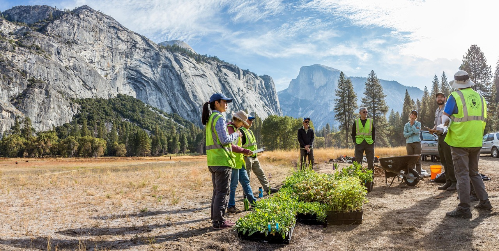

The Importance of Biodiversity and Healthy Ecosystems
Variety does our planet survive on. For a whole range of living organisms such as the tallest redwoods in the world and very minute bacteria, biodiversity is the essence of healthy ecosystems. Rainforests, coral reefs, and wetlands are examples of such ecosystems which are made up of intricate networks of living entities linked to their surroundings. Just as a healthy digestive system requires a variety of microbes, so too does a thriving ecosystem require many different species. The healthiness of our planet depends largely on its biodiversity. While numerous organisms recycle waste and filter water, plants together with algae produce the air we breathe. Various forests act as carbon sinks decreasing climate change. Bees and butterflies are some of the pollinators that foster reproduction in many plants including some which we consume for food. In short, biodiversity is at the center of how this planet serves us with life support systems while still making it function on its own. But this intricate network of life is at great risk. Deforestation and urbanization reduce wildlife living space. Delicate ecological balances are disrupted by pollution from chemicals and waste, among others. Ecosystems are further interrupted by climate change, resulting from heating up of the earth’s surface and extreme weather conditions. These natural systems lose strength with a reduction in biodiversity, thereby threatening clean air, water as well as other resources we depend on for survival.


What is Ecosystem Restoration?
Fixing and revitalizing ruined ecosystems is the meaning of ecosystem restoration. The idea is to reinstate a natural equilibrium of species and ecological processes. Various approaches are employed depending on what it takes to restore the ecosystem concerned. Some strategies may be carried out to rehabilitate habitat such as planting indigenous plants in areas that have been degraded and removing invasive species. Restocking native fish or mammals that have disappeared in an area can reintroduce lost ecological connections between them. Wildlife corridors, for instance, are secure land strips that facilitate movement of animals through patches of fragmented habitats. Consequently, we can put these heal wounds inflicted on our planet by using these restoration techniques.
Down below are some success stories of conservation efforts
The Great Green Wall:
An ambitious undertaking like none other wants to rejuvenate extensive areas of degraded land throughout the African Sahel spanning from Senegal to Djibouti. The project fights desertification through drought resistant indigenous trees and shrubs planting, improving soil fertility and creating wildlife habitats for the same reason.
The Thames River Cleanup:
London’s iconic Thames River was once declared biologically dead because of heavy pollution. However, the river has made a remarkable turnaround following decades of serious cleaning practices. Today, it is home to fish species such as salmon, seahorses, and even bottle nosed dolphins.
Yosemite Meadows Restoration:
Overgrown meadows in Yosemite National Park resulted from several decades’ absence of regular forest fires. Meadows have been restored by way of prescribed burns that imitate natural fires and reintroduction of indigenous plants. This approach has restored the health and biodiversity of the meadows which are now more fire resilient.

Spoon-billed Sandpiper Sanctuary:
Habitat loss affected this critically endangered shorebird due to wetland degradation on its Russian breeding sites. Protection measures were centered around these wetlands with efforts aimed at their rehabilitation such as creation of nesting islands, water regime control among others. As a result, spoon-billed sandpiper populations have shown promising signs of recovery.
How You Can Help:
Connect with conservation organizations:
Search online or ask at your local library or nature center to find environmental groups working on restoration projects in your area. You can volunteer your time to tasks like planting native trees, removing invasive plants, or monitoring wildlife populations.
Support restoration efforts:
Many organizations rely on donations to fund their restoration work. Consider donating to a cause you care about, or participate in fundraising events.
Reduce your waste:
Minimize your consumption of single-use plastics, recycle and compost whenever possible. Reducing your overall consumption also helps lessen the environmental impact.
Embrace sustainable living:
Support companies committed to sustainable practices and products. Choose locally sourced food whenever possible, as this reduces transportation emissions and promotes biodiversity in your region.
Educate yourself and others:
Learn more about the importance of biodiversity and ecosystem restoration. Share interesting facts and resources with your friends and family.
Advocate for change:
Contact your local representatives and voice your support for policies that protect and restore natural ecosystems.
The below links provide more information if you want to explore ways in which you can be a part of the conservation efforts.
Disclaimer:
The links are provided below are for information purpose only, and will direct you to external websites, please access them with precaution as we are not responsible for the content in those external websites.
United Nations Sustainable Development - Biodiversity and ecosystems - Visit link.
The Convention on Biological Diversity (CBD) - Visit link.
The World Wildlife Fund (WWF) - Visit link.
The Society for Ecological Restoration - Visit link.
The United Nations Environment Programme (UNEP) - Visit link.